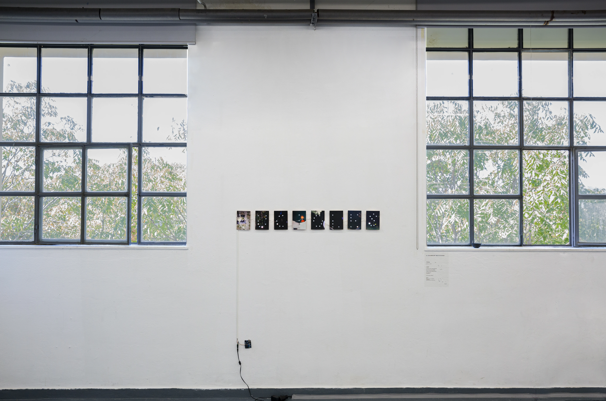
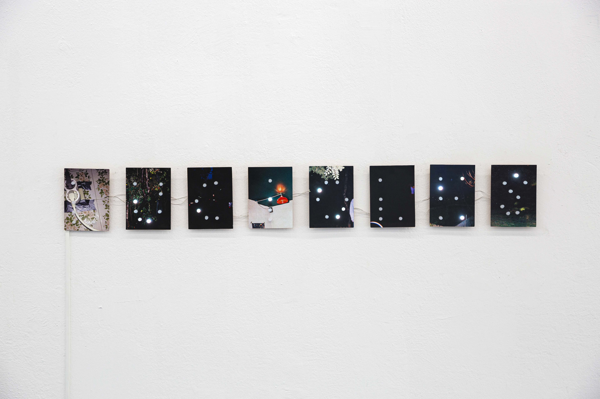

Fireflies have survived
2019Intermittent the fireflies
those unable to fly
a
mong
so much light
they wander
in opposition to the Wholeness of the Whale
under the black and gray of the spotlight they insinuate.
Invisible to meanings of great importance
in the unsayable of words they emit the signal.
Then they disappear
or simply leave.
Fantastic! They have survived!!
All together
Now
the riven fragments of the fireflies are here again
for those who know how to shift their gaze.
Part of How to dive if you're afraid of the whale

